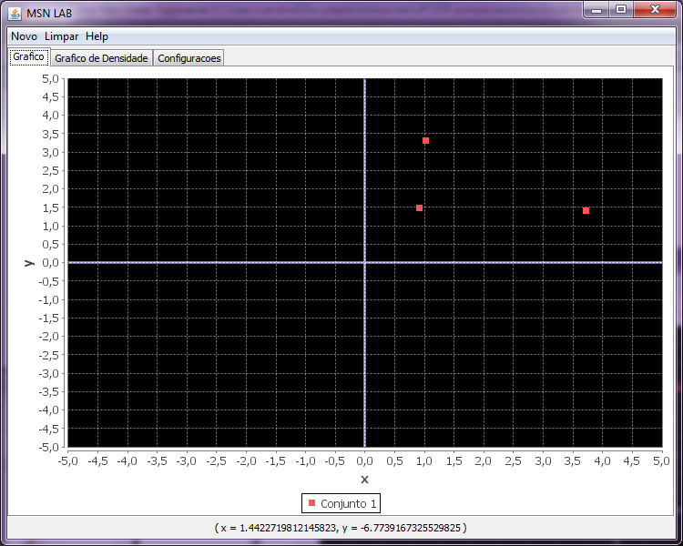
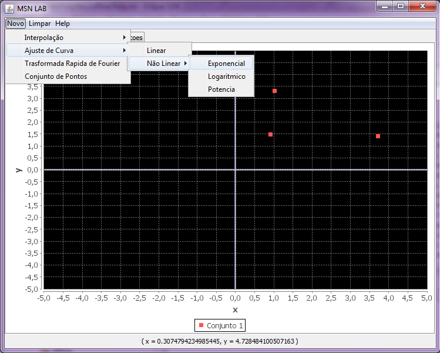
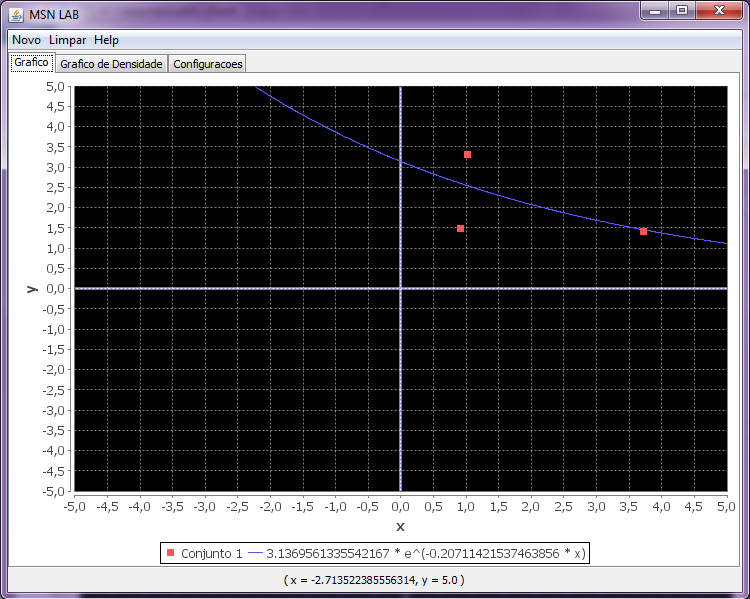

Ajuste de Curva Não Linear: Exponecial
Para utilizar o metodo de ajuste de curva não linear temos que:
- Escolher um conjunto de pontos no qual iremos aplicar:

- Clicar em Menu Novo -> Ajuste de Curva -> Não Linear ->
Exponecial

- Em seguida, podemos ver o gráfico da seguinte
maneira:
